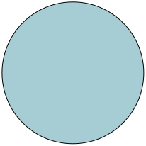

<!DOCTYPE html>
<html>
  <head>
    <title>ECL Experiment 4</title> 
	<script src="jspsych/jspsych.js"></script>
	<script src="jspsych/plugin-html-keyboard-response.js"></script>
	<script src="jspsych/plugin-image-button-response.js"></script>
	<script src="jspsych/plugin-categorize-html.js"></script>
	<script src="jspsych/plugin-preload.js"></script>
	<link href="jspsych/jspsych.css" rel="stylesheet" type="text/css" />
</head>
  </head>
  <body></body>
  <script>
	var jsPsych = initJsPsych();
	var timeline = [];

	var preload = {
 		type: jsPsychPreload,
		images: 
			[
			 'src/rcw.png', 
			 'src/bcw.png', 
			 'src/rtw.png',
			 'src/btw.png',
			 'src/rcd.png',
			 'src/bcd.png',
			 'src/rtd.png',
			 'src/btd.png',
			],
		audio:  
			[
			 'src/Correct.wav',
			 'src/Incorrect.wav',
			],
	};
	timeline.push(preload);

	var welcome_1 = {
		type: jsPsychHtmlKeyboardResponse,
		stimulus: `
		<center>
			<p>Welcome to the Experiment!</p>
			<br>
			<p>Press any Key to Continue.</p>
		</center>
		`,
	}

	timeline.push(welcome_1);

	var welcome_2 = {
		type: jsPsychHtmlKeyboardResponse,
		stimulus: `
		<center>
			<p>You are a newly employed physicist in the Deep Rock Corporate, and are assigned to the F-302 lab to investigate a group of exotic objects. The objects resemble simple geometric shapes and are otherwise unimpressive. However, an earlier report indicates that these objects contain a tremendous amount of energy, but will only release the energy (through an explosion) when they are arranged in a certain combination with other objects. Previous research in the lab had built up an experimental setup that uses disposable robots to arrange the objects, so one can comfortably observe the explosions in your control room.</p>
			<br>
			<p>There are currently 8 such objects known to the team, and they differ by their colors (red, blue), shapes (circle, triangle), and size (large, small). The Corporate has limited the investigation to a 2-object combination for now. Your job is to go through all of these combinations and deduce the correct (and minimal) combination that will always release energy through an explosion.</p>
		`
	}
	timeline.push(welcome_2);

    // /* define instructions trial */
    // var instructions = {
    //   type: jsPsychHtmlKeyboardResponse,
    //   stimulus: `
    //     <p>In this experiment, a circle will appear in the center 
    //     of the screen.</p><p>If the circle is <strong>blue</strong>, 
    //     press the letter F on the keyboard as fast as you can.</p>
    //     <p>If the circle is <strong>orange</strong>, press the letter J
    //     as fast as you can.</p>
    //     <div style='width: 700px;'>
    //     <div style='float: left;'></img>
    //     <p class='small'><strong>Press the F key</strong></p></div>
    //     <div style='float: right;'></img>
    //     <p class='small'><strong>Press the J key</strong></p></div>
    //     </div>
    //     <p>Press any key to begin.</p>
    //   `,
    //   post_trial_gap: 2000
    // };
	
	var trial = {
		type: jsPsychCategorizeHtml,
		stimulus:
			`
			<center>
			 <div style='width: 700px;'>
        	 <div style='float: left;'></img>
			 <div style='float: right;'></img>
			</center>
			`,
		key_answer: ['t'],
		choices: ['t', 'f'],
		text_answer: `True`,
        correct_text: "<p class='prompt'>Congrats! You prediction is correct!</p>",
        incorrect_text: "<p class='prompt'>Unfortunately, your prediction is incorrect.</p>",
        prompt: "<p>Your Prediction (T/F):</p>"
	}
	timeline.push(trial);

	jsPsych.run(timeline);

  </script>
</html>